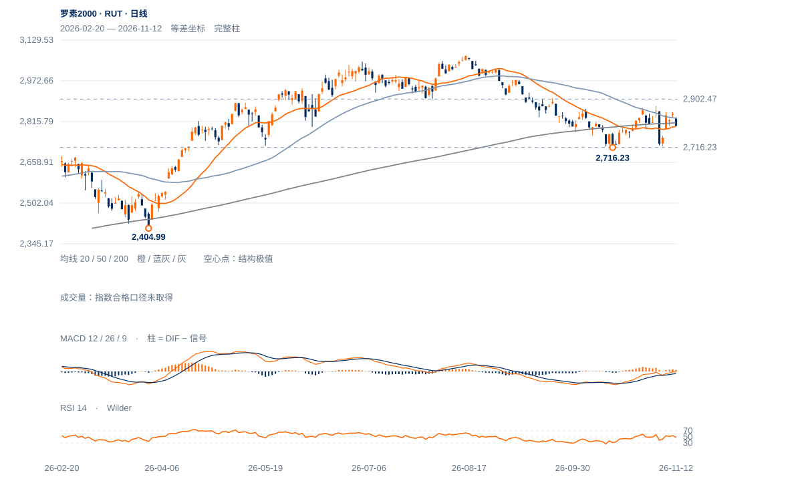

相对领先需要绝对保持
20日涨1.15%，相对纳指比值升6.52%，但现收2799.06低于200日线2811.17及50日2828.00。相对优势尚未越过绝对结构门槛。
未来1—5日先看2797—2811拉锯，反弹维持性弱于此前表象；1—3周在2875未确认前仍以区间而非新升势处理。

查看大图 ↗20日涨1.15%，相对纳指比值升6.52%，但现收2799.06低于200日线2811.17及50日2828.00。相对优势尚未越过绝对结构门槛。
12日跌1.66%，收盘位置6.2%，跌回11日低2832.42下方；11日2832—2852的高位停留没有保持。
11月4日高2875.14与6日低2721.00仍包围现价；截至6日完整周收2754.11也低于10/30周均线。ER20仅0.050，仍以反复路径为主。
2721仍高于10月16日2716.23，低位未继续扩张；重新回收2832并保持，可将本次回撤重新解释为强势整理。